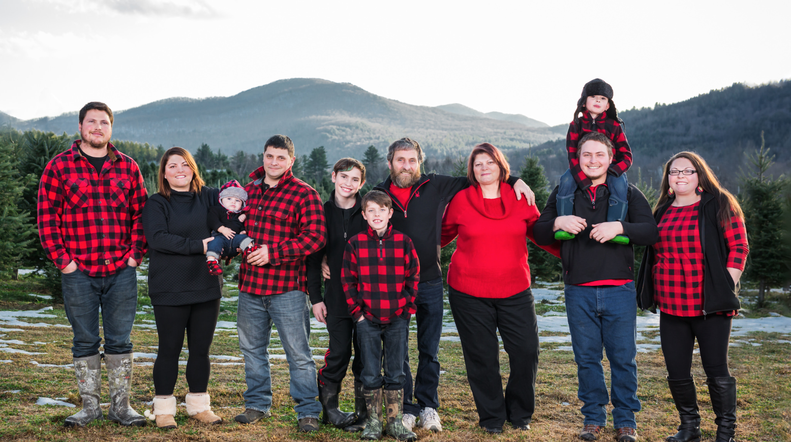

About Purinton Tree Farm
Purinton Tree Farm, located in the foothills of Huntington, Vermont. The first crop of Christmas Trees was planted in 1990 and the first crop was harvested in 1996. Peter and Carla Purinton operate the farm with their four children. Our farm has 14,000 balsam fir trees.
Trees
The trees we offer are balsam fir. The balsam fir has soft needles and a lovely Christmas tree aroma. We have 14,000 trees on 14 acres. Every May we plant seedlings. They grow and grow until mid-July when they are sheared to shape. The limbs harden shortly after and are ready for the season.
Wreaths and Kissing Balls
Carla Purinton handcrafts every wreath and kissing ball with the help of family. All the items are hand-crafted in the basement of the Purinton family home. The decorations are created using Christmas tree bows, ribbon, glitter, pinecones, and other decorative items. If you would like a custom-made wreath or kissing ball, please call and ask for Carla.
Maple Cotton Candy
Purinton Maple cotton candy is enough to make anyone smile. This timeless classic has been a customer favorite since day one!
Maple Products
Purinton Tree Farm offers many different maple products such as maple cream, maple candies, maple syrup, maple cotton candy, maple lollipops, and more! Find all our maple products at PurintonMaple.com